Who
- Samples are taken by CBA and by citizen scientists trained by CBA.
- At Lake Powell, RMA is involved and LPCA collects the samples.
- One-on-one training supports the citizen science program.
Water quality
This page presents the Coastal Dune Lake Water Quality Update from the Choctawhatchee Basin Alliance Estuary Program (CBAEP). Kayla Wingard, CBAEP Monitoring Program Manager, gave the update.
The numbers, charts, and field notes below are for public education. They come from that presentation and from the 2025 water chemistry report. Live monitoring and the official dashboard stay with the Choctawhatchee Basin Alliance (CBA). This website is not the official source for water-quality data.
Use the CBA Water Quality Dashboard for current conditions. The charts on this page are examples from the 2025 update. CBA accessed that dashboard on September 15, 2026. They do not replace the live record.
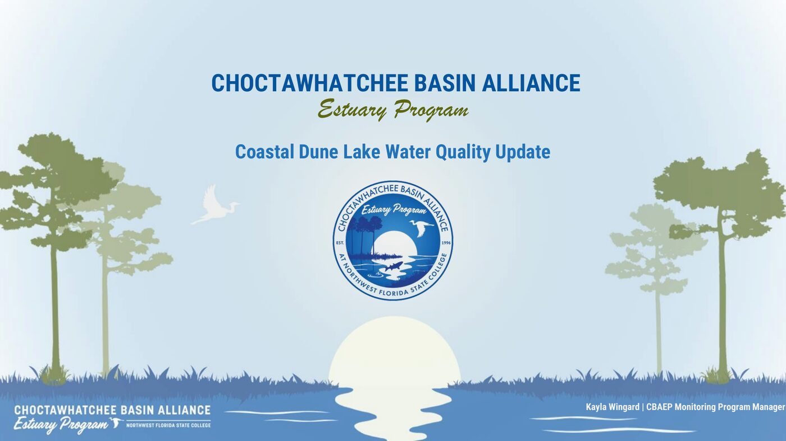
CBAEP describes the lakes this way in the update:
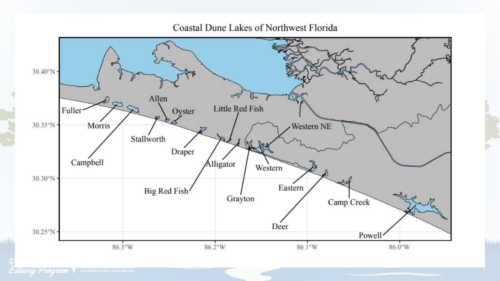
CBA and trained volunteers collect the samples. University of Florida LAKEWATCH analyzes nutrients and clarity. The record now covers more than 20 years.
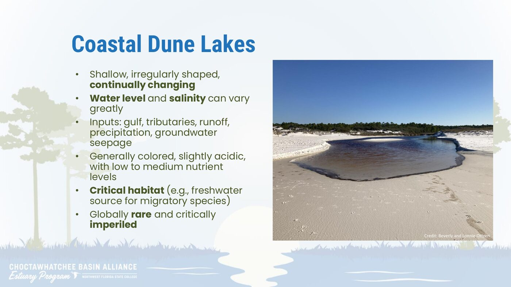
CBA records a set of readings in the field. LAKEWATCH analyzes nutrients, chlorophyll, and water clarity in the lab.
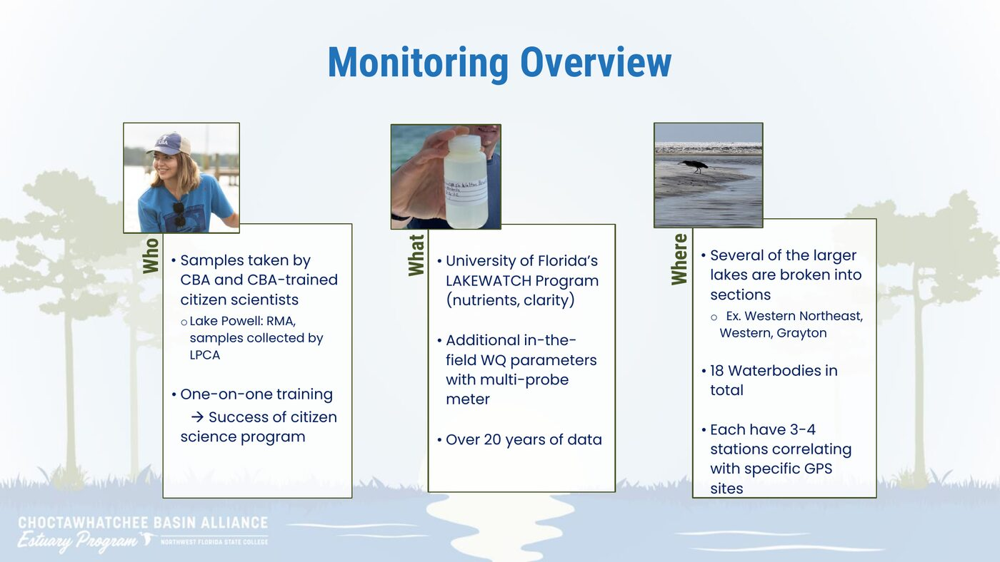
The update groups lakes by the low and high ends of salinity, total phosphorus, and dissolved oxygen in 2025. Names follow that presentation. Grayton and Western Northeast are sections of larger lakes in the monitoring program. The characteristics slide shortens Western Northeast to Western NE. Little Red Fish and Big Red Fish are the names used in the update.
Lowest salinity
0.04 ppt
Highest salinity
24 ppt
Lowest nutrients
8 µg/L TP
Highest nutrients
35 µg/L TP
Lowest dissolved oxygen
2.5 mg/L
Highest dissolved oxygen
8.3 mg/L
| Group | Value | Lakes in that group |
|---|---|---|
| Lowest salinity | 0.04 ppt | Campbell, Fuller, Morris, Allen, Stallworth |
| Highest salinity | 24 ppt | Grayton, Deer, Draper, Eastern, Powell |
| Lowest nutrients | 8 µg/L total phosphorus | Western, Deer, Campbell, Western Northeast, Stallworth |
| Highest nutrients | 35 µg/L total phosphorus | Oyster, Allen, Little Red Fish, Alligator, Big Red Fish |
| Lowest dissolved oxygen | 2.5 mg/L | Western, Alligator, Camp Creek, Western Northeast, Powell |
| Highest dissolved oxygen | 8.3 mg/L | Campbell, Morris, Stallworth, Fuller, Allen |
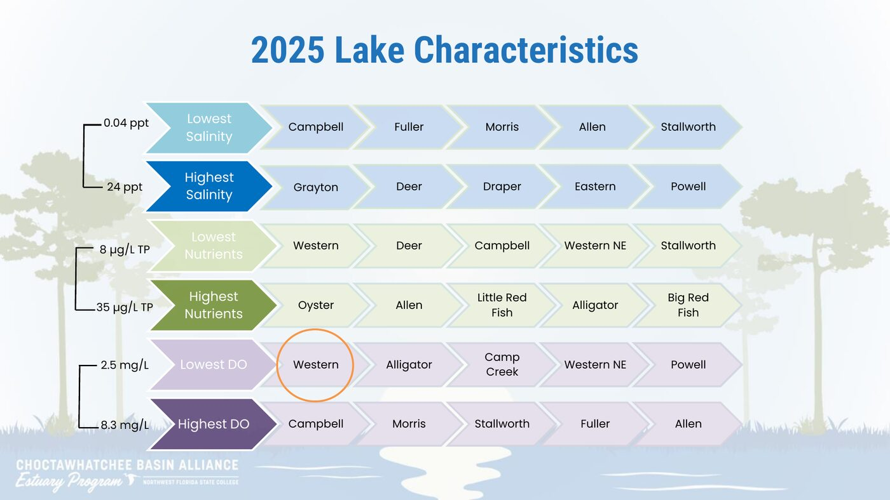
These two charts are examples from the CBA Water Quality Dashboard, included in the 2025 update. The dashboard, not this page, is the live record.
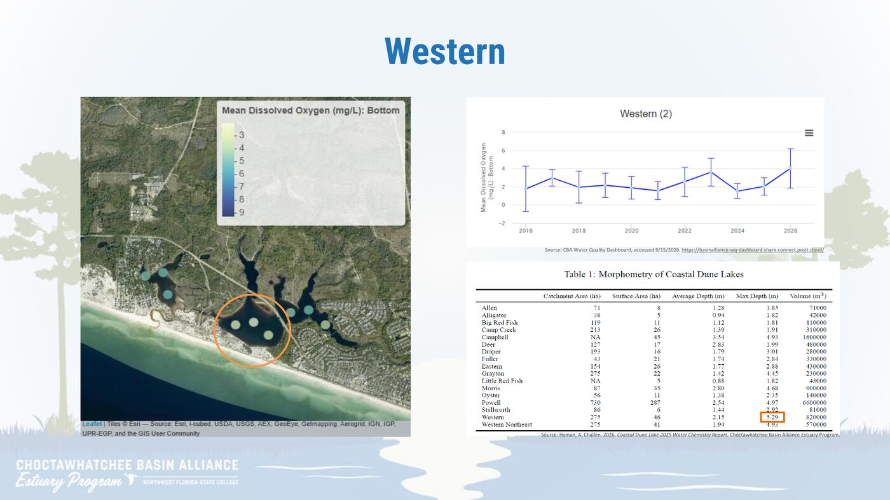
Trophic state is the amount of biological productivity in a waterbody. CBAEP uses a Trophic State Index (TSI) derived from chlorophyll-a.
TSI below 40
Minimal biomass. Clear. Oxygen-rich.
TSI 40 to 50
Moderate biomass. Somewhat clear. Potential anoxia at depth in summer months.
TSI 50 to 70
High algal biomass. Cloudy. Anoxia at depth. Potentially a sign of excess nutrient levels.
The 2025 update did not name lakes in this group.
TSI above 70
Very murky. Almost perpetual anoxia at depth. Dense mats of algae. Likely impaired status.
The 2025 update did not name lakes in this group.
Eastern Lake is listed under both oligotrophic and mesotrophic in the update. It is shown in both groups here, as presented.
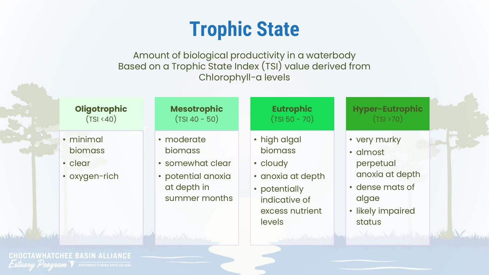
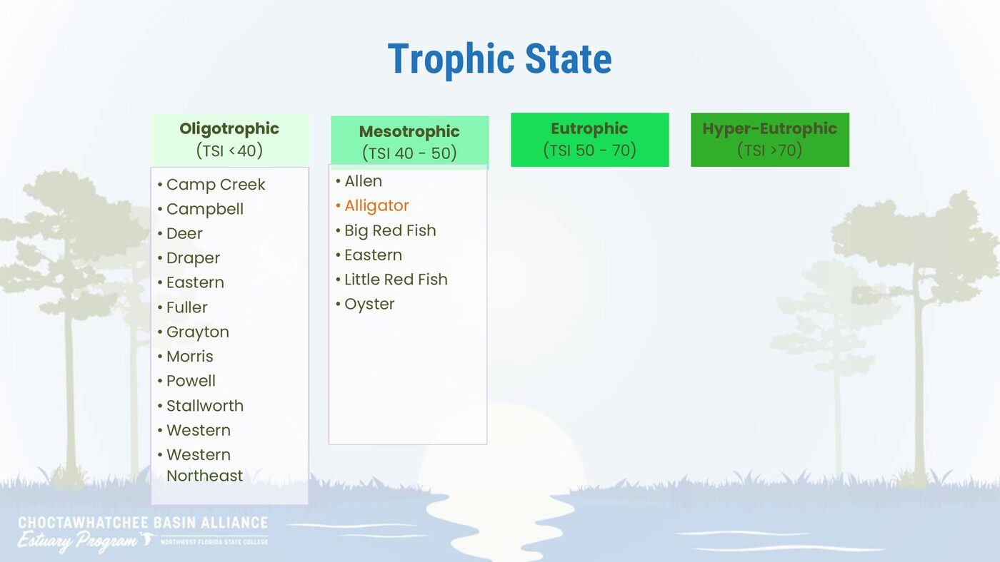
The update asks whether levels are increasing, decreasing, or stable, and how the 2025 data changes the 10-year trends. The focal trends are nutrients, chlorophyll, and oxygen. The table below is the 2016 to 2025 summary from the presentation. The monitoring overview describes 18 waterbodies. This trend table lists the 17 rows shown in the update.
| Lake | Phosphorus (µg/L) | Nitrogen (µg/L) | Chlorophyll (µg/L) | DO (mg/L) | pH | Salinity (ppt) |
|---|---|---|---|---|---|---|
| Allen | Increasing | Stable | Increasing | Stable | Increasing | Stable |
| Alligator | Increasing | Decreasing | Stable | Stable | Stable | Increasing |
| Big Red Fish | Stable | Decreasing | Decreasing | Increasing | Increasing | Increasing |
| Camp Creek | Stable | Decreasing | Decreasing | Stable | Stable | Increasing |
| Campbell | Stable | Decreasing | Stable | Increasing | Increasing | Stable |
| Deer | Stable | Decreasing | Stable | Increasing | Increasing | Increasing |
| Draper | Stable | Stable | Stable | Stable | Increasing | Stable |
| Eastern | Decreasing | Decreasing | Decreasing | Increasing | Stable | Stable |
| Fuller | Decreasing | Decreasing | Stable | Stable | Increasing | Stable |
| Grayton | Decreasing | Decreasing | Decreasing | Increasing | Stable | Increasing |
| Little Red Fish | Stable | Decreasing | Decreasing | Increasing | Increasing | Increasing |
| Morris | Stable | Decreasing | Stable | Stable | Increasing | Decreasing |
| Oyster | Decreasing | Decreasing | Decreasing | Increasing | Decreasing | Increasing |
| Powell | Stable | Decreasing | Decreasing | Stable | Stable | Increasing |
| Stallworth | Increasing | Decreasing | Stable | Increasing | Stable | Increasing |
| Western | Stable | Decreasing | Stable | Stable | Increasing | Increasing |
| Western Northeast | Stable | Decreasing | Stable | Increasing | Increasing | Increasing |
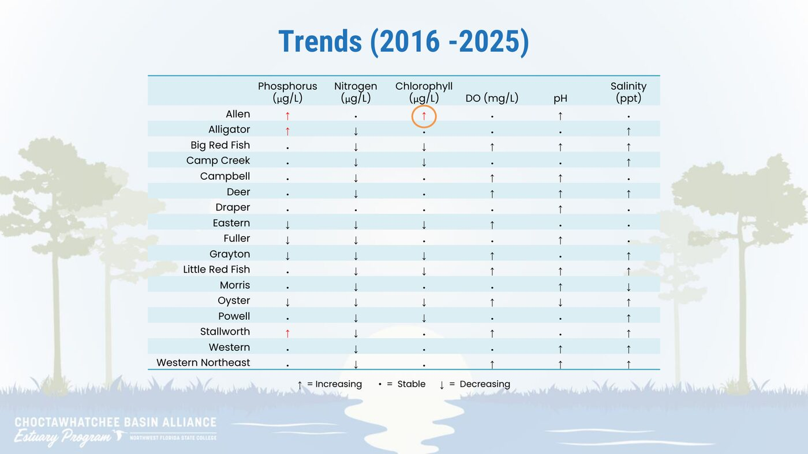
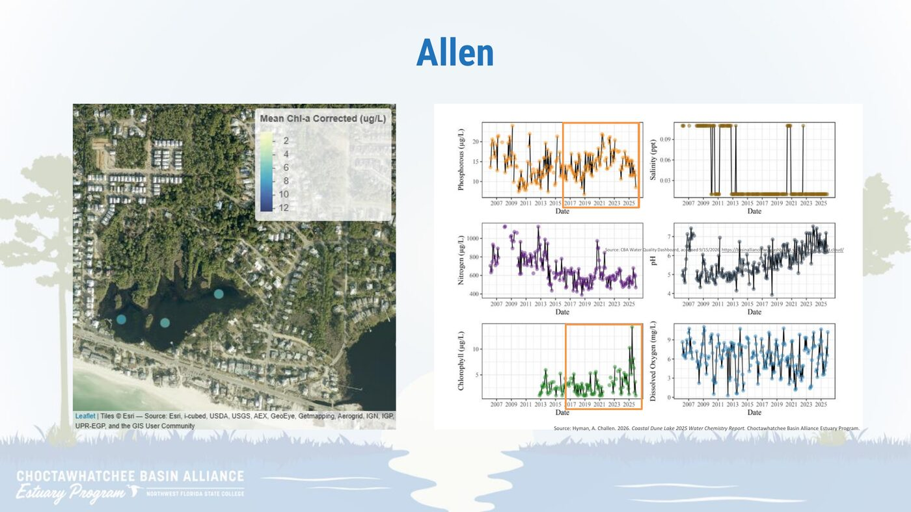
Volunteers and CBA staff noted what they saw on the water during 2025. The notes below follow the update.
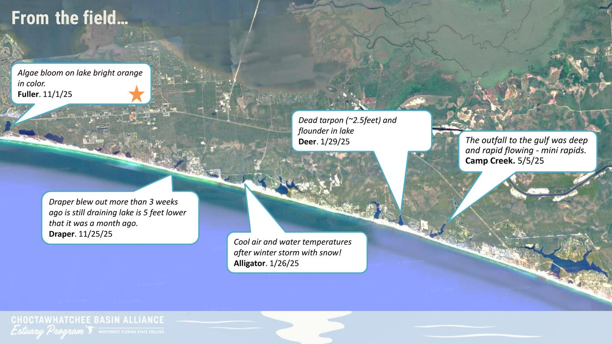
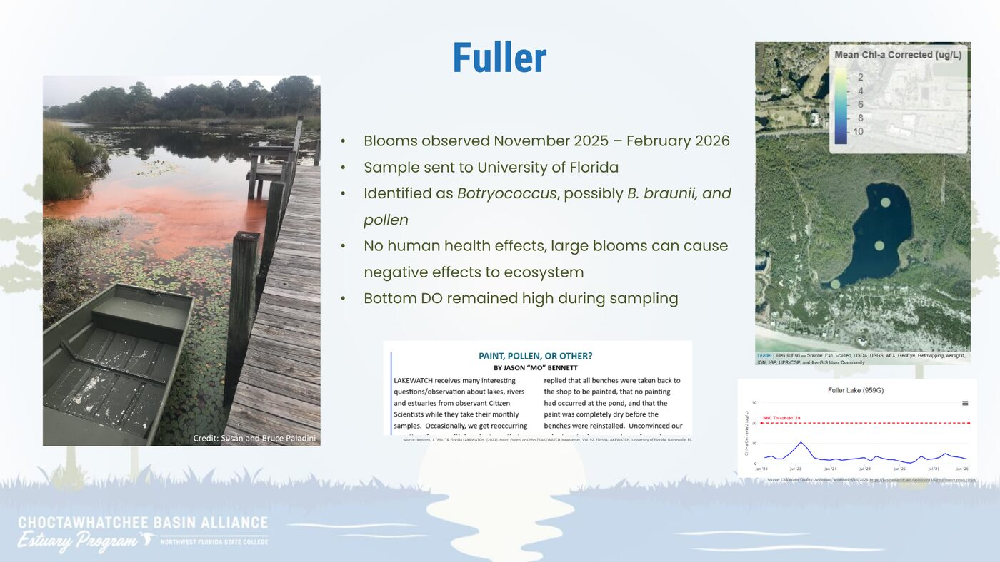
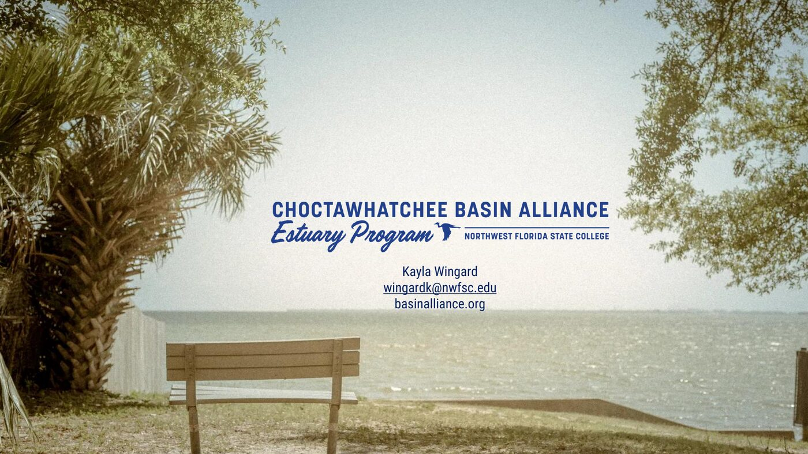
Data and interpretation belong to the Choctawhatchee Basin Alliance and the presenters. This page is for public education only.